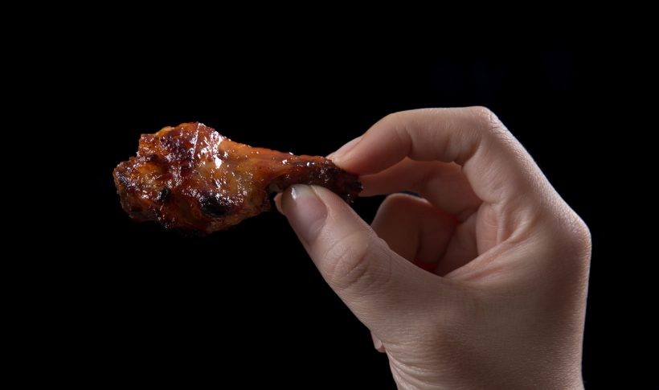

BBQ Chicken Wings Recipe

Tasty chicken snack.
Ingredients
- 1 kg Chicken wings & drumsticks
- 125 ml Sweet BBQ Sauce
- 250 ml Cold water
Steps
- Pour 250ml of cold water into the pressure cooker.
- Place a steamer basket in the pressure cooker & add the chicken wings and drumettes in the steamer basket.
- Close lid & cook on High pressure for 5 minutes, full natural release.
- Remove the chicken wings and drumettes from the pressure cooker & pat them really dry with paper towels.
- In a large mixing bowl, toss wings and drumettes with 125ml of BBQ sauce.
- Add the chicken wings and drumsticks into an air fry basket (Or oven safe dish)
- Airfry/Oven cook until sauce is glossy and caramelized, about 5–10 minutes.
- After 3 minutes, give it a toss to make sure the chicken wings brown evenly.
- Serve